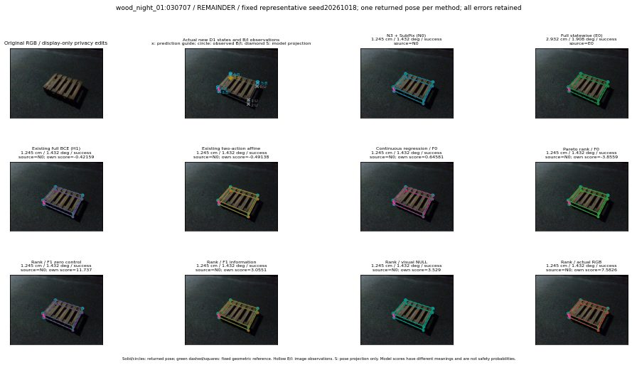

실선은 반환 자세, 초록 점선은 고정 기하 참조입니다. S는 영상 관측이 아닙니다. 점수는 모델별 의미가 다르며 보정된 안전 확률이 아닙니다. 개인정보 처리는 표시 사본에만 적용했습니다.
| 방법·seed | 위치 / 회전 / 공동성공 | 실제 출처 | 선택 후보 | 각 모델 자체 점수 |
|---|---|---|---|---|
| N0 | 1.245 cm / 1.432 deg / success | N0 | N/A | N/A |
| E0 | 2.932 cm / 1.908 deg / success | E0 | N/A | N/A |
| E0_REGENERATED | 2.932 cm / 1.908 deg / success | E0 | E0_REGENERATED | N/A |
| POSEFIX_SUBPIX_PF_ANCHOR | 0.5101 cm / 1.88 deg / success | OTHER | N/A | N/A |
| POSEFIX_SUBPIX_YOLO_ANCHOR | 0.5101 cm / 1.88 deg / success | OTHER | N/A | N/A |
| D1_H1_MLP_s20261018 | 1.245 cm / 1.432 deg / success | N0 | N0 | -0.4215920865535736 |
| D1_H1_MLP_s20261019 | 1.245 cm / 1.432 deg / success | N0 | N0 | -0.6494371294975281 |
| D1_H1_MLP_s20261020 | 1.245 cm / 1.432 deg / success | N0 | N0 | -0.4869177043437958 |
| D1_H1_PAIR_MLP_s20261018 | 1.245 cm / 1.432 deg / success | N0 | N0 | -0.985353946685791 |
| D1_H1_PAIR_MLP_s20261019 | 1.245 cm / 1.432 deg / success | N0 | N0 | -0.9275355935096741 |
| D1_H1_PAIR_MLP_s20261020 | 1.245 cm / 1.432 deg / success | N0 | N0 | -0.4140266478061676 |
| D1_H1_PAIR_ROLE_AFFINE_s20261018 | 1.245 cm / 1.432 deg / success | N0 | N0 | -0.49137818813323975 |
| D1_H1_PAIR_ROLE_AFFINE_s20261019 | 1.245 cm / 1.432 deg / success | N0 | N0 | -0.3298022150993347 |
| D1_H1_PAIR_ROLE_AFFINE_s20261020 | 1.245 cm / 1.432 deg / success | N0 | N0 | -0.17691048979759216 |
| R_CONT_F0_s20261018 | 1.245 cm / 1.432 deg / success | N0 | N0 | 0.6458128690719604 |
| R_CONT_F0_s20261019 | 1.245 cm / 1.432 deg / success | N0 | N0 | 0.6152065992355347 |
| R_CONT_F0_s20261020 | 1.245 cm / 1.432 deg / success | N0 | N0 | 0.6302784085273743 |
| R_ORDER_F0_s20261018 | 1.245 cm / 1.432 deg / success | N0 | N0 | -3.855943202972412 |
| R_ORDER_F0_s20261019 | 1.245 cm / 1.432 deg / success | N0 | N0 | -3.0791549682617188 |
| R_ORDER_F0_s20261020 | 1.245 cm / 1.432 deg / success | N0 | N0 | 3.1839170455932617 |
| R_ORDER_F1_ZERO_s20261018 | 1.245 cm / 1.432 deg / success | N0 | N0 | 11.736554145812988 |
| R_ORDER_F1_ZERO_s20261019 | 1.245 cm / 1.432 deg / success | N0 | N0 | 2.870758295059204 |
| R_ORDER_F1_ZERO_s20261020 | 1.245 cm / 1.432 deg / success | N0 | N0 | 3.120242118835449 |
| R_ORDER_F1_s20261018 | 1.245 cm / 1.432 deg / success | N0 | N0 | 3.0550947189331055 |
| R_ORDER_F1_s20261019 | 1.245 cm / 1.432 deg / success | N0 | N0 | 5.915246963500977 |
| R_ORDER_F1_s20261020 | 1.245 cm / 1.432 deg / success | N0 | N0 | 2.2747251987457275 |
| V_ORDER_NULL_s20261018 | 1.245 cm / 1.432 deg / success | N0 | N0 | 3.5289664268493652 |
| V_ORDER_NULL_s20261019 | 1.245 cm / 1.432 deg / success | N0 | N0 | 1.6405683755874634 |
| V_ORDER_NULL_s20261020 | 1.245 cm / 1.432 deg / success | N0 | N0 | 2.260871171951294 |
| V_ORDER_RGB_s20261018 | 1.245 cm / 1.432 deg / success | N0 | N0 | 7.58261251449585 |
| V_ORDER_RGB_s20261019 | 1.245 cm / 1.432 deg / success | N0 | N0 | 1.0248690843582153 |
| V_ORDER_RGB_s20261020 | 1.245 cm / 1.432 deg / success | N0 | N0 | -7.785555839538574 |